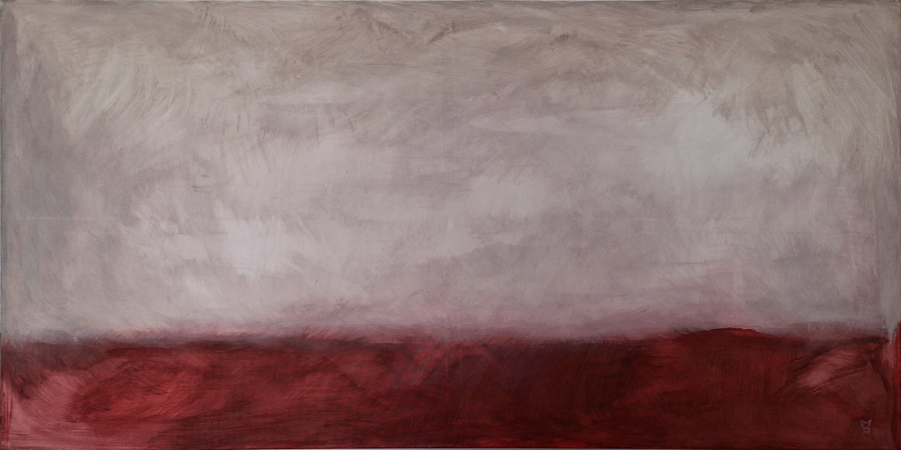
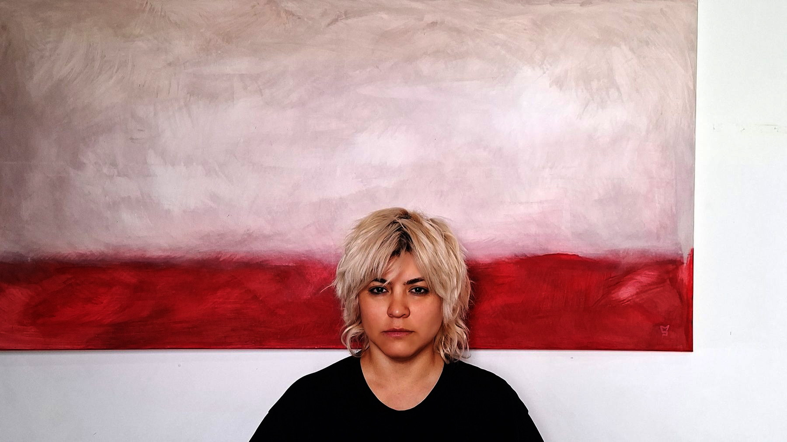
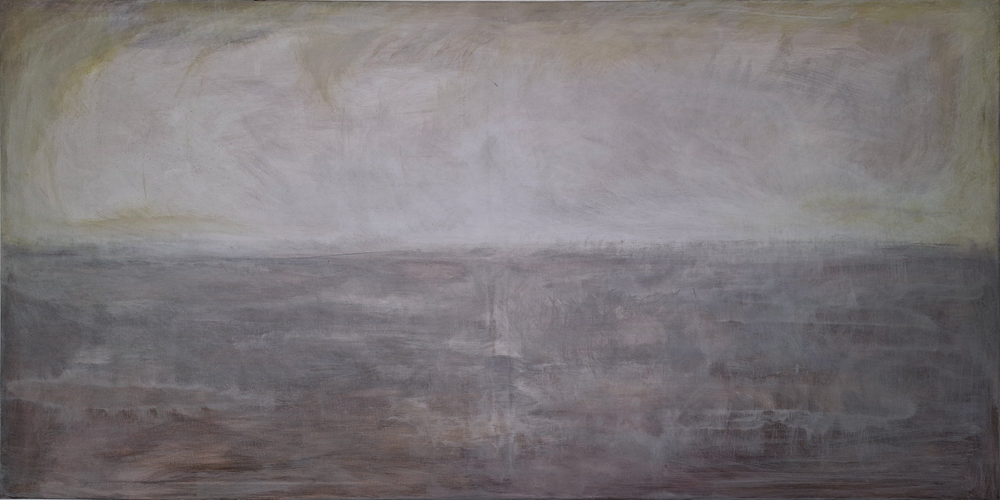
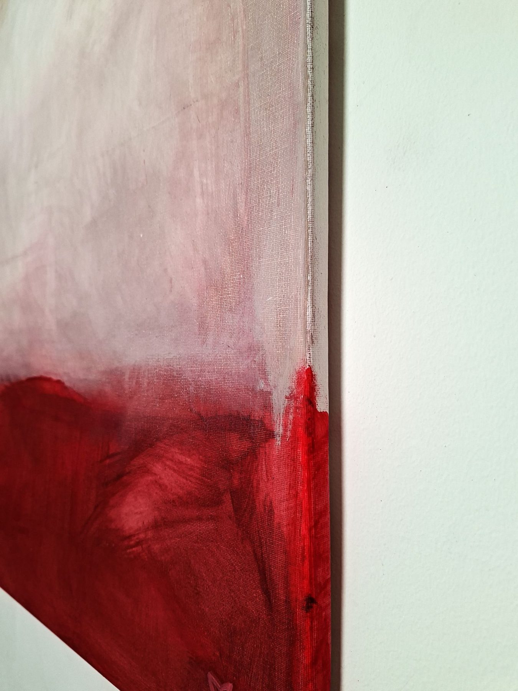

Dossier 2026
Me interesa el instante en que una superficie pintada empieza a parecer un lugar.

León, España
mariaperez.art@gmail.com
mariaperezart.github.io/estudio
Declaración artística
Me interesa el instante en que empiezas a ver un lugar en una superficie pintada. Desde lejos, una franja puede parecer un horizonte. Al acercarte, aparecen la trama del lienzo y el rastro de las capas. En Hábitats busco sostener ese vaivén entre la sensación de estar mirando un lugar y la presencia física de la pintura.
Trabajo en casa, en León, con acrílico sobre lienzos horizontales. Superpongo capas finas y vuelvo sobre la zona donde cambia el color. En Umbral, la banda roja hace que ese cambio se perciba enseguida. En Habitar, el paso del crudo al topo se extiende y tarda más en hacerse visible.
Soy autista. Mi atención a las variaciones pequeñas forma parte de ese proceso. Puedo volver muchas veces a la misma zona para ver cuánto cambia la lectura del cuadro al suavizar un borde o dejar visible una capa.
Biografía
Gabriela Pérez es una artista venezolana que vive y trabaja en León, España. Se formó en Diseño Gráfico en Mérida y ha realizado murales en Venezuela y Tenerife. En 2020 presentó pintura digital en Merkarte Joven, en Santa Cruz de Tenerife. Su trabajo reciente en acrílico sobre lienzo explora cómo una transición de color puede sugerir un horizonte.
Trayectoria
Serie
¿En qué momento una franja de pintura empieza a parecer un horizonte?
En Hábitats trabajo con dos campos de color y la franja donde se encuentran. En Umbral, el rojo marca el paso hacia el gris malva. En Habitar, el crudo y el topo se funden a lo largo de una transición más amplia.
La serie está en curso. Las dos piezas actuales son acrílicos sobre lienzo de 140 × 70 cm. El color continúa sobre el canto y la trama queda visible entre las veladuras. La propuesta de instalación reúne ambas obras en una pared.

Obra
En Umbral, una banda roja recorre la parte baja del lienzo. Hacia arriba, el rojo se va abriendo entre las veladuras hasta encontrarse con el gris malva. De cerca, la trama del lienzo interrumpe esa línea que, a distancia, parece un horizonte.
Obra

El crudo ocupa la parte alta de Habitar y se va apagando hacia el gris topo. Entre ambos queda una franja ancha en la que los colores todavía se mezclan. Al recorrerla de cerca, se distinguen las capas que de lejos parecen un solo tono.
Materia

Trabajo el acrílico en veladuras sucesivas. El color no se aplica: se acumula. La franja donde dos campos se encuentran es lo último que se resuelve, y es la razón de ser de cada pieza — no un borde, sino una zona de paso.
Contacto
León, España
mariaperezart.github.io/estudio
Imágenes en alta resolución, condiciones y disponibilidad, a petición.